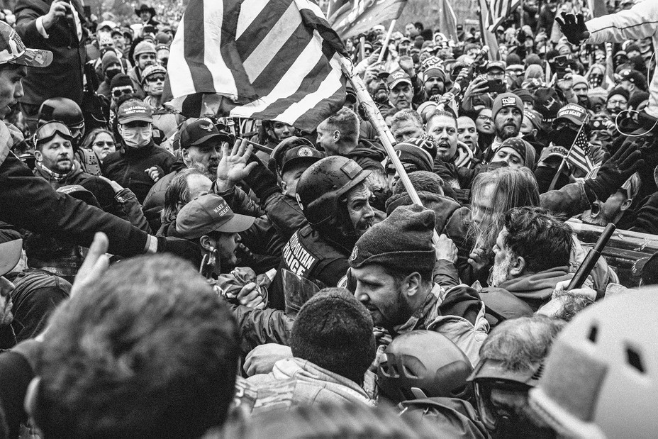
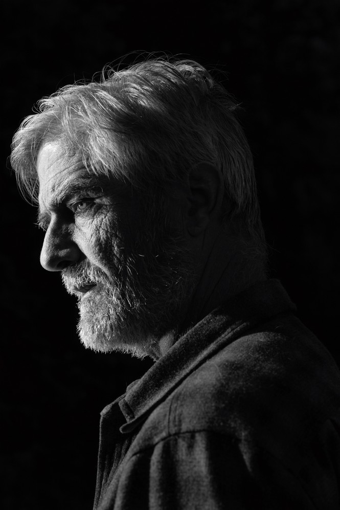
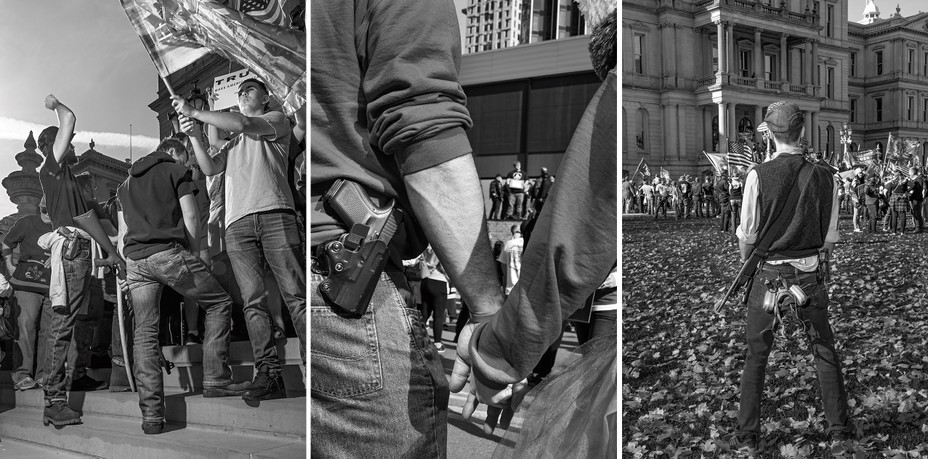
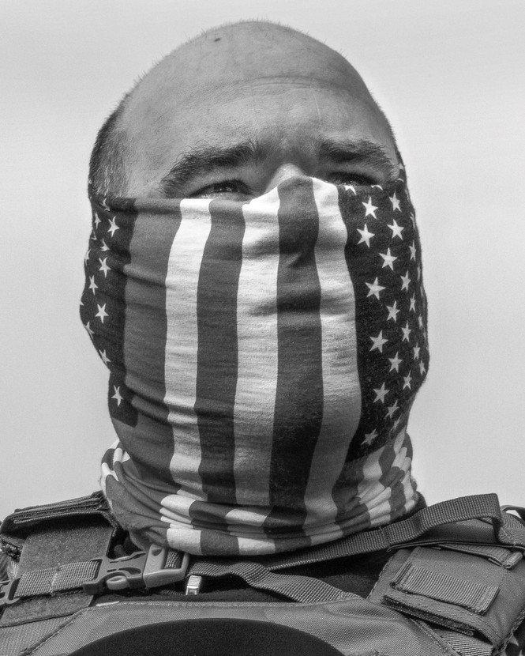

| 文章 | 章节 | 下一项 |
Trump’s Next Coup Has Already Begun
January 6 was practice. Donald Trump’s GOP is much better positioned to subvert the next election.
by Barton Gellman
Updated at 3:21 p.m. ET on December 9, 2021.
Technically, the next attempt to overthrow a national election may not qualify as a coup. It will rely on subversion more than violence, although each will have its place. If the plot succeeds, the ballots cast by American voters will not decide the presidency in 2024. Thousands of votes will be thrown away, or millions, to produce the required effect. The winner will be declared the loser. The loser will be certified president-elect.
The prospect of this democratic collapse is not remote. People with the motive to make it happen are manufacturing the means. Given the opportunity, they will act. They are acting already.
Who or what will safeguard our constitutional order is not apparent today. It is not even apparent who will try. Democrats, big and small D, are not behaving as if they believe the threat is real. Some of them, including President Joe Biden, have taken passing rhetorical notice, but their attention wanders. They are making a grievous mistake.
“The democratic emergency is already here,” Richard L. Hasen, a professor of law and political science at UC Irvine, told me in late October. Hasen prides himself on a judicious temperament. Only a year ago he was cautioning me against hyperbole. Now he speaks matter-of-factly about the death of our body politic. “We face a serious risk that American democracy as we know it will come to an end in 2024,” he said, “but urgent action is not happening.”
For more than a year now, with tacit and explicit support from their party’s national leaders, state Republican operatives have been building an apparatus of election theft. Elected officials in Arizona, Texas, Georgia, Pennsylvania, Wisconsin, Michigan, and other states have studied Donald Trump’s crusade to overturn the 2020 election. They have noted the points of failure and have taken concrete steps to avoid failure next time. Some of them have rewritten statutes to seize partisan control of decisions about which ballots to count and which to discard, which results to certify and which to reject. They are driving out or stripping power from election officials who refused to go along with the plot last November, aiming to replace them with exponents of the Big Lie. They are fine-tuning a legal argument that purports to allow state legislators to override the choice of the voters.
By way of foundation for all the rest, Trump and his party have convinced a dauntingly large number of Americans that the essential workings of democracy are corrupt, that made-up claims of fraud are true, that only cheating can thwart their victory at the polls, that tyranny has usurped their government, and that violence is a legitimate response.
Any Republican might benefit from these machinations, but let’s not pretend there’s any suspense. Unless biology intercedes, Donald Trump will seek and win the Republican nomination for president in 2024. The party is in his thrall. No opponent can break it and few will try. Neither will a setback outside politics—indictment, say, or a disastrous turn in business—prevent Trump from running. If anything, it will redouble his will to power.
The Big Story: Join Barton Gellman, along with staff writer Anne Applebaum and Atlantic editor in chief Jeffrey Goldberg, for a live virtual conversation about the threats to American democracy on December 13.
As we near the anniversary of January 6, investigators are still unearthing the roots of the insurrection that sacked the Capitol and sent members of Congress fleeing for their lives. What we know already, and could not have known then, is that the chaos wrought on that day was integral to a coherent plan. In retrospect, the insurrection takes on the aspect of rehearsal.
Even in defeat, Trump has gained strength for a second attempt to seize office, should he need to, after the polls close on November 5, 2024. It may appear otherwise—after all, he no longer commands the executive branch, which he tried and mostly failed to enlist in his first coup attempt. Yet the balance of power is shifting his way in arenas that matter more.
Trump is successfully shaping the narrative of the insurrection in the only political ecosystem that matters to him. The immediate shock of the event, which briefly led some senior Republicans to break with him, has given way to a near-unanimous embrace. Virtually no one a year ago, certainly not I, predicted that Trump could compel the whole party’s genuflection to the Big Lie and the recasting of insurgents as martyrs. Today the few GOP dissenters are being cast out. “2 down, 8 to go!” Trump gloated at the retirement announcement of Representative Adam Kinzinger, one of 10 House Republicans to vote for his second impeachment.
From the November 2020 issue: Barton Gellman on the election that could break America
Trump has reconquered his party by setting its base on fire. Tens of millions of Americans perceive their world through black clouds of his smoke. His deepest source of strength is the bitter grievance of Republican voters that they lost the White House, and are losing their country, to alien forces with no legitimate claim to power. This is not some transient or loosely committed population. Trump has built the first American mass political movement in the past century that is ready to fight by any means necessary, including bloodshed, for its cause.
Listen to an interview with William J. Walker, sergeant-at-arms of the U.S. House of Representatives, on The Experiment.
Listen and subscribe: Apple Podcasts | Spotify | Stitcher | Google Podcasts
At the edge of the Capitol grounds, just west of the reflecting pool, a striking figure stands in spit-shined shoes and a 10-button uniform coat. He is 6 foot 4, 61 years old, with chiseled good looks and an aura of command that is undimmed by retirement. Once, according to the silver bars on his collar, he held the rank of captain in the New York Fire Department. He is not supposed to wear the old uniform at political events, but he pays that rule no mind today. The uniform tells the world that he is a man of substance, a man who has saved lives and held authority. Richard C. Patterson needs every shred of that authority for this occasion. He has come to speak on behalf of an urgent cause. “Pelosi’s political prisoners,” he tells me, have been unjustly jailed.
Patterson is talking about the men and women held on criminal charges after invading the Capitol on January 6. He does not at all approve of the word insurrection.
“It wasn’t an insurrection,” he says at a September 18 rally called “Justice for January 6.” “None of our countrymen and -women who are currently being held are charged with insurrection. They’re charged with misdemeanor charges.”
Like so many others, Patterson is doing his best to parse a torrent of political information, and he is failing. His failures leave him, nearly always, with the worldview expounded by Trump.
Patterson is misinformed on that latter point. Of the more than 600 defendants, 78 are in custody when we speak. Most of those awaiting trial in jail are charged with serious crimes such as assault on a police officer, violence with a deadly weapon, conspiracy, or unlawful possession of firearms or explosives. Jeffrey McKellop of Virginia, for instance, is alleged to have hurled a flagpole like a spear into an officer’s face. (McKellop has pleaded not guilty.)
Patterson was not in Washington on January 6, but he is fluent in the revisionist narratives spread by fabulists and trolls on social media. He knows those stories verse by verse, the ones about January 6 and the ones about the election rigged against Trump. His convictions are worth examining because he and the millions of Americans who think as he does are the primary source of Trump’s power to corrupt the next election. With a sufficient dose of truth serum, most Republican politicians would likely confess that Biden won in 2020, but the great mass of lumpen Trumpers, who believe the Big Lie with unshakable force, oblige them to pretend otherwise. Like so many others, Patterson is doing his best to parse a torrential flow of political information, and he is failing. His failures leave him, nearly always, with the worldview expounded by Trump.
We fall into a long conversation in the sweltering heat, then continue it for weeks by phone and email. I want to plumb the depths of his beliefs, and understand what lies behind his commitment to them. He is prepared to grant me the status of “fellow truth-seeker.”
“The ‘Stop the Steal’ rally for election integrity was peaceful,” he says. “I think the big takeaway is when Old Glory made its way into the Rotunda on January 6, our fearless public officials dove for cover at the sight of the American flag.”
What about the violence? The crowds battling police?
“The police were seen on video in uniform allowing people past the bicycle-rack barricades and into the building,” he replies. “I mean, that’s established. The unarmed crowd did not overpower the officers in body armor. That doesn’t happen. They were allowed in.”
Surely he has seen other video, though. Shaky, handheld footage, taken by the rioters themselves, of police officers falling under blows from a baseball bat, a hockey stick, a fire extinguisher, a length of pipe. A crowd crushing Officer Daniel Hodges in a doorway, shouting “Heave! Ho!”
Does Patterson know that January 6 was among the worst days for law-enforcement casualties since September 11, 2001? That at least 151 officers from the Capitol Police and the Metropolitan Police Department suffered injuries, including broken bones, concussions, chemical burns, and a Taser-induced heart attack?
Patterson has not heard these things. Abruptly, he shifts gears. Maybe there was violence, but the patriots were not to blame.

In the mayhem of January 6, at least 151 police officers suffered injuries, including broken bones, concussions, and chemical burns. Above: A law-enforcement officer is attacked. (Mel D. Cole)
“There were people there deliberately to make it look worse than what it was,” he explains. “A handful of ill-behaved, potentially, possibly agents provocateur.” He repeats the phrase: “Agents provocateur, I have on information, were in the crowd … They were there for nefarious means. Doing the bidding of whom? I have no idea.”
“‘On information’?” I ask. What information?
“You can look up this name,” he says. “Retired three-star Air Force General McInerney. You got to find him on Rumble. They took him off YouTube.”
Sure enough, there on Rumble (and still on YouTube) I find a video of Lieutenant General Thomas G. McInerney, 84, three decades gone from the Air Force. His story takes a long time to tell, because the plot includes an Italian satellite and Pakistan’s intelligence service and former FBI Director James Comey selling secret U.S. cyberweapons to China. Eventually it emerges that “Special Forces mixed with antifa” combined to invade the seat of Congress on January 6 and then blame the invasion on Trump supporters, with the collusion of Senators Chuck Schumer and Mitch McConnell, along with House Speaker Nancy Pelosi.
In a further wrinkle, Pelosi, by McInerney’s account, became “frantic” soon afterward when she discovered that her own false-flag operation had captured a laptop filled with evidence of her treason. McInerney had just come from the White House, he says in his monologue, recorded two days after the Capitol riot. Trump was about to release the Pelosi evidence. McInerney had seen the laptop with his own eyes.
It shook me that Patterson took this video for proof. If my house had caught fire 10 years before, my life might have depended on his discernment and clarity of thought. He was an Eagle Scout. He earned a college degree. He keeps current on the news. And yet he has wandered off from the empirical world, placing his faith in fantastic tales that lack any basis in fact or explicable logic.
McInerney’s tale had spread widely on Facebook, Twitter, Parler, and propaganda sites like We Love Trump and InfoWars. It joined the January 6 denialist canon and lodged firmly in Patterson’s head. I reached the general by phone and asked about evidence for his claims. He mentioned a source, whose name he couldn’t reveal, who had heard some people saying “We are playing antifa today.” McInerney believed they were special operators because “they looked like SOF people.” He believed that one of them had Pelosi’s laptop, because his source had seen something bulky and square under the suspect’s raincoat. He conceded that even if it was a laptop, he couldn’t know whose it was or what was on it. For most of his story, McInerney did not even claim to have proof. He was putting two and two together. It stood to reason. In truth, prosecutors had caught and charged a neo-Nazi sympathizer who had videotaped herself taking the laptop from Pelosi’s office and bragged about it on Discord. She was a home health aide, not a special operator. (As of this writing, she has not yet entered a plea.)
The general’s son, Thomas G. McInerney Jr., a technology investor, learned that I had been talking with his father and asked for a private word with me. He was torn between conflicting obligations of filial loyalty, and took a while to figure out what he wanted to say.
“He has a distinguished service record,” he told me after an otherwise off-the-record conversation. “He wants what’s best for the nation and he speaks with a sense of authority, but I have concerns at his age that his judgment is impaired. The older he’s gotten, the stranger things have gotten in terms of what he’s saying.”
I tell all of this and more to Patterson. McInerney, the Military Times reported, “went off the rails” after a successful Air Force career. For a while during the Obama years he was a prominent birther and appeared a lot on Fox News, before being fired as a Fox commentator in 2018 for making a baseless claim about John McCain. Last November, he told the WVW Broadcast Network that the CIA operated a computer-server farm in Germany that had helped rig the presidential vote for Biden, and that five Special Forces soldiers had just died trying to seize the evidence. The Army and U.S. Special Operations Command put out dutiful statements that no such mission and no such casualties had taken place.
Of course, Patterson wrote to me sarcastically, “governments would NEVER lie to their OWN citizens.” He did not trust the Pentagon’s denials. There are seldom words or time enough to lay a conspiracy theory to rest. Each rebuttal is met with a fresh round of delusions.
Patterson is admirably eager for a civil exchange of views. He portrays himself as a man who “may be wrong, and if I am I admit it,” and he does indeed concede on small points. But a deep rage seems to fuel his convictions. I asked him the first time we met if we could talk “about what’s happening in the country, not the election itself.”
His smile faded. His voice rose.
“There ain’t no fucking way we are letting go of 3 November 2020,” he said. “That is not going to fucking happen. That’s not happening. This motherfucker was stolen. The world knows this bumbling, senile, career corrupt fuck squatting in our White House did not get 81 million votes.”
He had many proofs. All he really needed, though, was arithmetic. “The record indicates 141 [million] of us were registered to vote and cast a ballot on November 3,” he said. “Trump is credited with 74 million votes out of 141 million. That leaves 67 million for Joe; that doesn’t leave any more than that. Where do these 14 million votes come from?”
Patterson did not recall where he had heard those figures. He did not think he had read Gateway Pundit, which was the first site to advance the garbled statistics. Possibly he saw Trump amplify the claim on Twitter or television, or some other stop along the story’s cascading route across the right-wing mediaverse. Reuters did a good job debunking the phony math, which got the total number of voters wrong.

Richard Patterson, a retired firefighter, in the Bronx. Like tens of millions of other Trump supporters, Patterson firmly believes that the 2020 election was stolen. (Philip Montgomery for The Atlantic)
I was interested in something else: the worldview that guided Patterson through the statistics. It appeared to him (incorrectly) that not enough votes had been cast to account for the official results. Patterson assumed that only fraud could explain the discrepancy, that all of Trump’s votes were valid, and that the invalid votes must therefore belong to Biden.
“Why don’t you say Joe Biden got 81 million and there’s only 60 million left for Trump?” I asked.
Patterson was astonished.
“It’s not disputed, the 74 million vote count that was credited to President Trump’s reelection effort,” he replied, baffled at my ignorance. “It’s not in dispute … Have you heard that President Trump engaged in cheating and fraudulent practices and crooked machines?”
Biden was the one accused of rigging the vote. Everybody said so. And for reasons unspoken, Patterson wanted to be carried away by that story.
Robert A. Pape, a well-credentialed connoisseur of political violence, watched the mob attack the Capitol on a television at home on January 6. A name came unbidden to his mind: Slobodan Milošević.
Back in June 1989, Pape had been a postdoctoral fellow in political science when the late president of Serbia delivered a notorious speech. Milošević compared Muslims in the former Yugoslavia to Ottomans who had enslaved the Serbs six centuries before. He fomented years of genocidal war that destroyed the hope for a multiethnic democracy, casting Serbs as defenders against a Muslim onslaught on “European culture, religion, and European society in general.”
By the time Trump unleashed the angry crowd on Congress, Pape, who is 61, had become a leading scholar on the intersection of warfare and politics. He saw an essential similarity between Milošević and Trump—one that suggested disturbing hypotheses about Trump’s most fervent supporters. Pape, who directs the University of Chicago Project on Security and Threats, or CPOST, called a staff meeting two days after the Capitol attack. “I talked to my research team and told them we were going to reorient everything we were doing,” he told me.
Milošević, Pape said, inspired bloodshed by appealing to fears that Serbs were losing their dominant place to upstart minorities. “What he is arguing” in the 1989 speech “is that Muslims in Kosovo and generally throughout the former Yugoslavia are essentially waging genocide on the Serbs,” Pape said. “And really, he doesn’t use the word replaced. But this is what the modern term would be.”
Pape was alluding to a theory called the “Great Replacement.” The term itself has its origins in Europe. But the theory is the latest incarnation of a racist trope that dates back to Reconstruction in the United States. Replacement ideology holds that a hidden hand (often imagined as Jewish) is encouraging the invasion of nonwhite immigrants, and the rise of nonwhite citizens, to take power from white Christian people of European stock. When white supremacists marched with torches in Charlottesville, Virginia, in 2017, they chanted, “Jews will not replace us!”
Trump borrowed periodically from the rhetorical canon of replacement. His remarks on January 6 were more disciplined than usual for a president who typically spoke in tangents and unfinished thoughts. Pape shared with me an analysis he had made of the text that Trump read from his prompter.
“Our country has been under siege for a long time, far longer than this four-year period,” Trump told the crowd. “You’re the real people. You’re the people that built this nation.” He famously added, “And we fight. We fight like hell. And if you don’t fight like hell, you’re not going to have a country anymore.”
Just like Milošević, Trump had skillfully deployed three classic themes of mobilization to violence, Pape wrote: “The survival of a way of life is at stake. The fate of the nation is being determined now. Only genuine brave patriots can save the country.”
Watching how the Great Replacement message was resonating with Trump supporters, Pape and his colleagues suspected that the bloodshed on January 6 might augur something more than an aberrant moment in American politics. The prevailing framework for analyzing extremist violence in the U.S., they thought, might not be adequate to explain what was happening.
When the Biden administration published a new homeland-security strategy in June, it described the assault on the Capitol as a product of “domestic violent extremists,” and invoked an intelligence assessment that said attacks by such extremists come primarily from lone wolves or small cells. Pape and his colleagues doubted that this captured what had happened on January 6. They set about seeking systematic answers to two basic questions: Who were the insurgents, in demographic terms? And what political beliefs animated them and their sympathizers?
Pape’s three-bedroom house, half an hour’s drive south of Chicago, became the pandemic headquarters of a virtual group of seven research professionals, supported by two dozen University of Chicago undergraduates. The CPOST researchers gathered court documents, public records, and news reports to compile a group profile of the insurgents.
“The thing that got our attention first was the age,” Pape said. He had been studying violent political extremists in the United States, Europe, and the Middle East for decades. Consistently, around the world, they tended to be in their 20s and early 30s. Among the January 6 insurgents, the median age was 41.8. That was wildly atypical.
Then there were economic anomalies. Over the previous decade, one in four violent extremists arrested by the FBI had been unemployed. But only 7 percent of the January 6 insurgents were jobless, and more than half of the group had a white-collar job or owned their own business. There were doctors, architects, a Google field-operations specialist, the CEO of a marketing firm, a State Department official. “The last time America saw middle-class whites involved in violence was the expansion of the second KKK in the 1920s,” Pape told me.
Yet these insurgents were not, by and large, affiliated with known extremist groups. Several dozen did have connections with the Proud Boys, the Oath Keepers, or the Three Percenters militia, but a larger number—six out of every seven who were charged with crimes—had no ties like that at all.
Kathleen Belew, a University of Chicago historian and co-editor of A Field Guide to White Supremacy, says it is no surprise that extremist groups were in the minority. “January 6 wasn’t designed as a mass-casualty attack, but rather as a recruitment action” aimed at mobilizing the general population, she told me. “For radicalized Trump supporters … I think it was a protest event that became something bigger.”
Pape’s team mapped the insurgents by home county and ran statistical analyses looking for patterns that might help explain their behavior. The findings were counterintuitive. Counties won by Trump in the 2020 election were less likely than counties won by Biden to send an insurrectionist to the Capitol. The higher Trump’s share of votes in a county, in fact, the lower the probability that insurgents lived there. Why would that be? Likewise, the more rural the county, the fewer the insurgents. The researchers tried a hypothesis: Insurgents might be more likely to come from counties where white household income was dropping. Not so. Household income made no difference at all.
Only one meaningful correlation emerged. Other things being equal, insurgents were much more likely to come from a county where the white share of the population was in decline. For every one-point drop in a county’s percentage of non-Hispanic whites from 2015 to 2019, the likelihood of an insurgent hailing from that county increased by 25 percent. This was a strong link, and it held up in every state.
Trump and some of his most vocal allies, Tucker Carlson of Fox News notably among them, had taught supporters to fear that Black and brown people were coming to replace them. According to the latest census projections, white Americans will become a minority, nationally, in 2045. The insurgents could see their majority status slipping before their eyes.
The CPOST team decided to run a national opinion survey in March, based on themes it had gleaned from the social-media posts of insurgents and the statements they’d made to the FBI under questioning. The researchers first looked to identify people who said they “don’t trust the election results” and were prepared to join a protest “even if I thought the protest might turn violent.” The survey found that 4 percent of Americans agreed with both statements, a relatively small fraction that nonetheless corresponds to 10 million American adults.
In June, the researchers sharpened the questions. This brought another surprise. In the new poll, they looked for people who not only distrusted the election results but agreed with the stark assertion that “the 2020 election was stolen from Donald Trump and Joe Biden is an illegitimate president.” And instead of asking whether survey subjects would join a protest that “might” turn violent, they looked for people who affirmed that “the use of force is justified to restore Donald Trump to the presidency.”
“Stop the Steal” protesters in Detroit on November 6, 2020. Republican county authorities later attempted to rescind their votes to certify Detroit’s election results. (Philip Montgomery)
Pollsters ordinarily expect survey respondents to give less support to more transgressive language. “The more you asked pointed questions about violence, the more you should be getting ‘social-desirability bias,’ where people are just more reluctant,” Pape told me.
Here, the opposite happened: the more extreme the sentiments, the greater the number of respondents who endorsed them. In the June results, just over 8 percent agreed that Biden was illegitimate and that violence was justified to restore Trump to the White House. That corresponds to 21 million American adults. Pape called them “committed insurrectionists.” (An unrelated Public Religion Research Institute survey on November 1 found that an even larger proportion of Americans, 12 percent, believed both that the election had been stolen from Trump and that “true American patriots may have to resort to violence in order to save our country.”)
“This really is a new, politically violent mass movement,” Pape told me. He drew an analogy to Northern Ireland in the late 1960s, at the dawn of the Troubles.
Why such a large increase? Pape believed that Trump supporters simply preferred the harsher language, but “we cannot rule out that attitudes hardened” between the first and second surveys. Either interpretation is troubling. The latter, Pape said, “would be even more concerning since over time we would normally think passions would cool.”
In the CPOST polls, only one other statement won overwhelming support among the 21 million committed insurrectionists. Almost two-thirds of them agreed that “African American people or Hispanic people in our country will eventually have more rights than whites.” Slicing the data another way: Respondents who believed in the Great Replacement theory, regardless of their views on anything else, were nearly four times as likely as those who did not to support the violent removal of the president.
The committed insurrectionists, Pape judged, were genuinely dangerous. There were not many militia members among them, but more than one in four said the country needed groups like the Oath Keepers and Proud Boys. One-third of them owned guns, and 15 percent had served in the military. All had easy access to the organizing power of the internet.
What Pape was seeing in these results did not fit the government model of lone wolves and small groups of extremists. “This really is a new, politically violent mass movement,” he told me. “This is collective political violence.”
Pape drew an analogy to Northern Ireland in the late 1960s, at the dawn of the Troubles. “In 1968, 13 percent of Catholics in Northern Ireland said that the use of force for Irish nationalism was justified,” he said. “The Provisional IRA was created shortly thereafter with only a few hundred members.” Decades of bloody violence followed. And 13 percent support was more than enough, in those early years, to sustain it.
“It’s the community’s support that is creating a mantle of legitimacy—a mandate, if you would, that justifies the violence” of a smaller, more committed group, Pape said. “I’m very concerned it could happen again, because what we’re seeing in our surveys … is 21 million people in the United States who are essentially a mass of kindling or a mass of dry wood that, if married to a spark, could in fact ignite.”
The story of Richard Patterson, once you delve into it, is consonant with Pape’s research. Trump appealed to him as an “in-your-face, brash ‘America First’ guy who has the interest of ‘We the People.’ ” But there was more. Decades of personal and political grudges infuse Patterson’s understanding of what counts as “America” and who counts as “we.”
Where Patterson lives, in the Bronx, there were 20,413 fewer non-Hispanic white people in the 2020 census than in 2010. The borough had reconfigured from 11 percent white to 9 percent.
Patterson came from Northern Irish stock and grew up in coastal Northern California. He was a “lifetime C student” who found ambition at age 14 when he began to hang around at a local fire station. As soon as he finished high school he took the test to join the Oakland fire department, earning, he said, outstanding scores.
“But in those days,” he recalled, “Oakland was just beginning to diversify and hire females. So no job for the big white kid.” The position went to “this little woman … who I know failed the test.”
Patterson tried again in San Francisco, but found the department operating under a consent decree. Women and people of color, long excluded, had to be accepted in the incoming cohort. “So, again, the big white kid is told, ‘Fuck you, we got a whole fire department of guys that look just like you. We want the department to look different because diversity is all about an optic.’ ” The department could hire “the Black applicant instead of myself.”
Patterson bought a one-way ticket to New York, earned a bachelor’s degree in fire science, and won an offer to join New York’s Bravest. But desegregation had come to New York, too, and Patterson found himself seething.
In 1982, a plaintiff named Brenda Berkman had won a lawsuit that opened the door to women in the FDNY. A few years later, the department scheduled training sessions “to assist male firefighters in coming to terms with the assimilation of females into their ranks.” Patterson’s session did not go well. He was suspended without pay for 10 days after a judge found that he had called the trainer a scumbag and a Communist and chased him out of the room, yelling, “Why don’t you fuck Brenda Berkman and I hope you both die of AIDS.” The judge found that the trainer had “reasonably feared for his safety.” Patterson continues to maintain his innocence.
Later, as a lieutenant, Patterson came across a line on a routine form that asked for his gender and ethnicity. He resented that. “There was no box for ‘Fuck off,’ so I wrote in ‘Fuck off,’ ” he said. “So they jammed me up for that”—this time a 30-day suspension without pay.
Even while Patterson rose through the ranks, he kept on finding examples of how the world was stacked against people like him. “I look at the 2020 election as sort of an example on steroids of affirmative action. The straight white guy won, but it was stolen from him and given to somebody else.”
Wait. Wasn’t this a contest between two straight white guys?
Not really, Patterson said, pointing to Vice President Kamala Harris: “Everybody touts the gal behind the president, who is currently, I think, illegitimately in our White House. It is, quote, a woman of color, like this is some—like this is supposed to mean something.” And do not forget, he added, that Biden said, “If you have a problem figuring out whether you’re for me or Trump, then you ain’t Black.”
What to do about all this injustice? Patterson did not want to say, but he alluded to an answer: “Constitutionally, the head of the executive branch can’t tell an American citizen what the fuck to do. Constitutionally, all the power rests with the people. That’s you and me, bro. And Mao is right that all the power emanates from the barrel of a gun.”
Did he own a gun himself? “My Second Amendment rights, like my medical history, are my own business,” he replied.
Many of Patterson’s fellow travelers at the “Justice for January 6” protest were more direct about their intentions. One of them was a middle-aged man who gave his name as Phil. The former Coast Guard rescue diver from Kentucky had joined the crowd at the Capitol on January 6 but said he has not heard from law enforcement. Civil war is coming, he told me, and “I would fight for my country.”
Was he speaking metaphorically?
“No, I’m not,” he said. “Oh Lord, I think we’re heading for it. I don’t think it’ll stop. I truly believe it. I believe the criminals—Nancy Pelosi and her criminal cabal up there—is forcing a civil war. They’re forcing the people who love the Constitution, who will give their lives to defend the Constitution—the Democrats are forcing them to take up arms against them, and God help us all.”
Gregory Dooner, who was selling flags at the protest, said he had been just outside the Capitol on January 6 as well. He used to sell ads for AT&T Advertising Solutions, and now, in retirement, he peddles MAGA gear: $10 for a small flag, $20 for a big one.
Violent political conflict, he told me, was inevitable, because Trump’s opponents “want actual war here in America. That’s what they want.” He added a slogan of the Three Percenters militia: “When tyranny becomes law, rebellion becomes duty.” The Declaration of Independence, which said something like that, was talking about King George III. If taken seriously today, the slogan calls for a war of liberation against the U.S. government.
“Yo, hey—hey,” Dooner called out to a customer who had just unfurled one of his banners. “I want to read him the flag.”

Protesters rally in Michigan in the days after the election. (Philip Montgomery)
He recited the words inscribed on the Stars and Stripes: “A free people ought not only to be armed and disciplined but they should have sufficient arms and ammunition to maintain a status of independence from any who might attempt to abuse them, which would include their own government.”
“George Washington wrote that,” he said. “That’s where we’re at, gentlemen.”
I looked it up. George Washington did not write anything like that. The flag was Dooner’s best seller, even so.
Over the course of Trump’s presidency, one of the running debates about the man boiled down to: menace or clown? Threat to the republic, or authoritarian wannabe who had no real chance of breaking democracy’s restraints? Many observers rejected the dichotomy—the essayist Andrew Sullivan, for instance, described the former president as “both farcical and deeply dangerous.” But during the interregnum between November 3 and Inauguration Day, the political consensus leaned at first toward farce. Biden had won. Trump was breaking every norm by refusing to concede, but his made-up claims of fraud were getting him nowhere.
In a column headlined “There Will Be No Trump Coup,” the New York Times writer Ross Douthat had predicted, shortly before Election Day, that “any attempt to cling to power illegitimately will be a theater of the absurd.” He was responding in part to my warning in these pages that Trump could wreak great harm in such an attempt.
The Ticket podcast: Barton Gellman on how Trump could tamper with the 2020 vote
One year later, Douthat looked back. In scores of lawsuits, “a variety of conservative lawyers delivered laughable arguments to skeptical judges and were ultimately swatted down,” he wrote, and state election officials warded off Trump’s corrupt demands. My own article, Douthat wrote, had anticipated what Trump tried to do. “But at every level he was rebuffed, often embarrassingly, and by the end his plotting consisted of listening to charlatans and cranks proposing last-ditch ideas” that could never succeed.
Douthat also looked ahead, with guarded optimism, to the coming presidential election. There are risks of foul play, he wrote, but “Trump in 2024 will have none of the presidential powers, legal and practical, that he enjoyed in 2020 but failed to use effectively in any shape or form.” And “you can’t assess Trump’s potential to overturn an election from outside the Oval Office unless you acknowledge his inability to effectively employ the powers of that office when he had them.”
That, I submit respectfully, is a profound misunderstanding of what mattered in the coup attempt a year ago. It is also a dangerous underestimate of the threat in 2024—which is larger, not smaller, than it was in 2020.
It is true that Trump tried and failed to wield his authority as commander in chief and chief law-enforcement officer on behalf of the Big Lie. But Trump did not need the instruments of office to sabotage the electoral machinery. It was citizen Trump—as litigant, as candidate, as dominant party leader, as gifted demagogue, and as commander of a vast propaganda army—who launched the insurrection and brought the peaceful transfer of power to the brink of failure.
All of these roles are still Trump’s for the taking. In nearly every battle space of the war to control the count of the next election—statehouses, state election authorities, courthouses, Congress, and the Republican Party apparatus—Trump’s position has improved since a year ago.
To understand the threat today, you have to see with clear eyes what happened, what is still happening, after the 2020 election. The charlatans and cranks who filed lawsuits and led public spectacles on Trump’s behalf were sideshows. They distracted from the main event: a systematic effort to nullify the election results and then reverse them. As milestones passed—individual certification by states, the meeting of the Electoral College on December 14—Trump’s hand grew weaker. But he played it strategically throughout. The more we learn about January 6, the clearer the conclusion becomes that it was the last gambit in a soundly conceived campaign—one that provides a blueprint for 2024.
The strategic objective of nearly every move by the Trump team after the networks called the election for Joe Biden on November 7 was to induce Republican legislatures in states that Biden won to seize control of the results and appoint Trump electors instead. Every other objective—in courtrooms, on state election panels, in the Justice Department, and in the office of the vice president—was instrumental to that end.
Electors are the currency in a presidential contest and, under the Constitution, state legislators control the rules for choosing them. Article II provides that each state shall appoint electors “in such Manner as the Legislature thereof may direct.” Since the 19th century, every state has ceded the choice to its voters, automatically certifying electors who support the victor at the polls, but in Bush v. Gore the Supreme Court affirmed that a state “can take back the power to appoint electors.” No court has ever said that a state could do that after its citizens have already voted, but that was the heart of Trump’s plan.
Every path to stealing the election required GOP legislatures in at least three states to repudiate the election results and substitute presidential electors for Trump. That act alone would not have ensured Trump’s victory. Congress would have had to accept the substitute electors when it counted the votes, and the Supreme Court might have had a say. But without the state legislatures, Trump had no way to overturn the verdict of the voters.
Trump needed 38 electors to reverse Biden’s victory, or 37 for a tie that would throw the contest to the House of Representatives. For all his improvisation and flailing in the postelection period, Trump never lost sight of that goal. He and his team focused on obtaining the required sum from among the 79 electoral votes in Arizona (11), Georgia (16), Michigan (16), Nevada (6), Pennsylvania (20), and Wisconsin (10).
Nothing close to this loss of faith in democracy has happened here before. Even Confederates recognized Lincoln’s election; they tried to secede because they knew they had lost.
Trump had many tactical setbacks. He and his advocates lost 64 of 65 challenges to election results in court, and many of them were indeed comically inept. His intimidation of state officials, though it also failed in the end, was less comical. Trump was too late, barely, to strong-arm Republican county authorities into rejecting Detroit’s election tally (they tried and failed to rescind their “yes” votes after the fact), and Aaron Van Langevelde, the crucial Republican vote on Michigan’s Board of State Canvassers, stood up to Trump’s pressure to block certification of the statewide results. Georgia Secretary of State Brad Raffensperger refused the president’s request to “find” 11,780 votes for Trump after two recounts confirming Biden’s win. Two Republican governors, in Georgia and Arizona, signed certificates of Biden’s victory; the latter did so even as a telephone call from Trump rang unanswered in his pocket. The acting attorney general stared down Trump’s plan to replace him with a subordinate, Jeffrey B. Clark, who was prepared to send a letter advising the Georgia House and Senate to reconsider their state’s election results.
Read: How close did the U.S. come to a successful coup?
Had Trump succeeded in any of these efforts, he would have given Republican state legislators a credible excuse to meddle; one success might have led to a cascade. Trump used judges, county boards, state officials, and even his own Justice Department as stepping-stones to his ultimate target: Republican legislators in swing states. No one else could give him what he wanted.
Even as these efforts foundered, the Trump team achieved something crucial and enduring by convincing tens of millions of angry supporters, including a catastrophic 68 percent of all Republicans in a November PRRI poll, that the election had been stolen from Trump. Nothing close to this loss of faith in democracy has happened here before. Even Confederates recognized Abraham Lincoln’s election; they tried to secede because they knew they had lost. Delegitimating Biden’s victory was a strategic win for Trump—then and now—because the Big Lie became the driving passion of the voters who controlled the fate of Republican legislators, and Trump’s fate was in the legislators’ hands.
A woman bears a flag inscribed with the Second Amendment at a gun-rights rally in Virginia in 2020. (Philip Montgomery)
Even so, three strategic points of failure left Trump in dire straits in the days before January 6.
First, although Trump won broad rhetorical support from state legislators for his fictitious claims of voter fraud, they were reluctant to take the radical, concrete step of nullifying the votes of their own citizens. Despite enormous pressure, none of the six contested states put forward an alternate slate of electors for Trump. Only later, as Congress prepared to count the electoral votes, did legislators in some of those states begin talking unofficially about “decertifying” the Biden electors.
The second strategic point of failure for Trump was Congress, which had the normally ceremonial role of counting the electoral votes. In the absence of action by state legislatures, the Trump team had made a weak attempt at a fallback, arranging for Republicans in each of the six states to appoint themselves “electors” and transmit their “ballots” for Trump to the president of the Senate. Trump would have needed both chambers of Congress to approve his faux electors and hand him the presidency. Republicans controlled only the Senate, but that might have enabled Trump to create an impasse in the count. The trouble there was that fewer than a dozen Republican senators were on board.
Trump’s third strategic setback was his inability, despite all expectations, to induce his loyal No. 2 to go along. Vice President Mike Pence would preside over the Joint Session of Congress to count the electoral votes, and in a memo distributed in early January, Trump’s legal adviser John Eastman claimed, on “very solid legal authority,” that Pence himself “does the counting, including the resolution of disputed electoral votes … and all the Members of Congress can do is watch.” If Congress would not crown Trump president, in other words, Pence could do it himself. And if Pence would not do that, he could simply disregard the time limits for debate under the Electoral Count Act and allow Republicans like Senator Ted Cruz to filibuster. “That creates a stalemate,” Eastman wrote, “that would give the state legislatures more time.”
Time. The clock was ticking. Several of Trump’s advisers, Rudy Giuliani among them, told allies that friendly legislatures were on the brink of convening special sessions to replace their Biden electors. The Trump conspiracy had made nowhere near that much progress, in fact, but Giuliani was saying it could be done in “five to 10 days.” If Congress went ahead with the count on January 6, it would be too late.
On the afternoon of January 5, Sidney Powell—she of the “Kraken” lawsuits, for which she would later be sanctioned in one court and sued in another—prepared an emergency motion addressed to Justice Samuel Alito. The motion, entered into the Supreme Court docket the next day, would go largely unnoticed by the media and the public amid the violence of January 6; few have heard of it even now. But it was Plan A to buy Trump some time.
Alito was the circuit justice for the Fifth Circuit, where Powell, on behalf of Representative Louie Gohmert, had sued to compel Mike Pence to take charge of validating electors, disregarding the statutory role of Congress. The vice president had “exclusive authority and sole discretion as to which set of electors to count or even whether to count no set of electors,” Powell wrote. The Electoral Count Act, which says quite otherwise, was unconstitutional.
Powell did not expect Alito to rule on the merits immediately. She asked him to enter an emergency stay of the electoral count and schedule briefs on the constitutional claim. If Alito granted the stay, the clock on the election would stop and Trump would gain time to twist more arms in state legislatures.
Late in the same afternoon, January 5, Steve Bannon sat behind a microphone for his live War Room show, backswept gray hair spilling from his headphones to the epaulets on a khaki field jacket. He was talking, not very guardedly, about Trump’s Plan B to buy time the next day.
“The state legislatures are the center of gravity” of the fight, he said, because “people are going back to the original interpretation of the Constitution.”
And there was big news: The Republican leaders of the Pennsylvania Senate, who had resisted pressure from Trump to nullify Biden’s victory, had just signed their names to a letter averring that the commonwealth’s election results “should not have been certified by our Secretary of State.” (Bannon thanked his viewers for staging protests at those legislators’ homes in recent days.) The letter, addressed to Republican leaders in Congress, went on to “ask that you delay certification of the Electoral College to allow due process as we pursue election integrity in our Commonwealth.”
For weeks, Rudy Giuliani had starred in spurious “fraud” hearings in states where Biden had won narrowly. “After all these hearings,” Bannon exulted on air, “we finally have a state legislature … that is moving.” More states, the Trump team hoped, would follow Pennsylvania’s lead.
Meanwhile, the Trumpers would use the new letter as an excuse for putting off a statutory requirement to count the electoral votes “on the sixth day of January.” Senator Cruz and several allies proposed an “emergency” 10-day delay, ostensibly for an audit.
This was a lawless plan on multiple grounds. While the Constitution gives state legislatures the power to select electors, it does not provide for “decertifying” electors after they have cast their ballots in the Electoral College, which had happened weeks before. Even if Republicans had acted earlier, they could not have dismissed electors by writing a letter. Vanishingly few legal scholars believed that a legislature could appoint substitute electors by any means after voters had made their choice. And the governing statute, the Electoral Count Act, had no provision for delay past January 6, emergency or otherwise. Trump’s team was improvising at this point, hoping that it could make new law in court, or that legal niceties would be overwhelmed by events. If Pence or the Republican-controlled Senate had fully backed Trump’s maneuver, there is a chance that they might in fact have produced a legal stalemate that the incumbent could have exploited to stay in power.
Above all else, Bannon knew that Trump had to stop the count, which was set to begin at 1 p.m. the next day. If Pence would not stop it and Alito did not come through, another way would have to be found.
“Tomorrow morning, look, what’s going to happen, we’re going to have at the Ellipse—President Trump speaks at 11,” Bannon said, summoning his posse to turn up when the gates opened at 7 a.m. Bannon would be back on air in the morning with “a lot more news and analysis of exactly what’s going to go on through the day.”
Then a knowing smile crossed Bannon’s face. He swept a palm in front of him, and he said the words that would capture attention, months later, from a congressional select committee.
“I’ll tell you this,” Bannon said. “It’s not going to happen like you think it’s going to happen. Okay, it’s going to be quite extraordinarily different. All I can say is, strap in.” Earlier the same day, he had predicted, “All hell is going to break loose tomorrow.”
Bannon signed off at 6:58 p.m. Later that night he turned up in another war room, this one a suite at the Willard Hotel, across the street from the White House. He and others in Trump’s close orbit, including Eastman and Giuliani, had been meeting there for days. Congressional investigators have been deploying subpoenas and the threat of criminal sanctions—Bannon has been indicted for contempt of Congress—to discover whether they were in direct contact with the “Stop the Steal” rally organizers and, if so, what they planned together.
Shortly after Bannon signed off, a 6-foot-3-inch mixed martial artist named Scott Fairlamb responded to his call. Fairlamb, who fought under the nickname “Wildman,” reposted Bannon’s war cry to Facebook: “All hell is going to break loose tomorrow.” The next morning, after driving before dawn from New Jersey to Washington, he posted again: “How far are you willing to go to defend our Constitution?” Fairlamb, then 43, answered the question for his own part a few hours later at the leading edge of a melee on the West Terrace of the Capitol—seizing a police baton and later punching an officer in the face. “What patriots do? We fuckin’ disarm them and then we storm the fuckin’ Capitol!” he screamed at fellow insurgents.
Less than an hour earlier, at 1:10 p.m., Trump had finished speaking and directed the crowd toward the Capitol. The first rioters breached the building at 2:11 p.m. through a window they shattered with a length of lumber and a stolen police shield. About one minute later, Fairlamb burst through the Senate Wing Door brandishing the baton, a teeming mob behind him. (Fairlamb pleaded guilty to assaulting an officer and other charges.)
Another minute passed, and then without warning, at 2:13, a Secret Service detail pulled Pence away from the Senate podium, hustling him out through a side door and down a short stretch of hallway.
Pause for a moment to consider the choreography. Hundreds of angry men and women are swarming through the halls of the Capitol. They are fresh from victory in hand-to-hand combat with an outnumbered force of Metropolitan and Capitol Police. Many have knives or bear spray or baseball bats or improvised cudgels. A few have thought to carry zip-tie wrist restraints. Some are shouting “Hang Mike Pence!” Others call out hated Democrats by name.
At 2:26, the Secret Service agents told Pence again that he had to move. “The third time they came in,” the vice president’s chief of staff told me, “it wasn’t really a choice.”
These hundreds of rioters are fanning out, intent on finding another group of roughly comparable size: 100 senators and 435 members of the House, in addition to the vice president. How long can the one group roam freely without meeting the other? Nothing short of stunning good luck, with an allowance for determined police and sound evacuation plans, prevented a direct encounter.
The vice president reached Room S-214, his ceremonial Senate office, at about 2:14 p.m. No sooner had his entourage closed the door, which is made of opaque white glass, than the leading edge of the mob reached a marble landing 100 feet away. Had the rioters arrived half a minute earlier, they could not have failed to spot the vice president and his escorts speed-walking out of the Senate chamber.
Ten minutes later, at 2:24, Trump egged on the hunt. “Mike Pence didn’t have the courage to do what should have been done to protect our Country and our Constitution,” he tweeted.
Two minutes after that, at 2:26, the Secret Service agents told Pence again what they had already said twice before: He had to move.
“The third time they came in, it wasn’t really a choice,” Marc Short, the vice president’s chief of staff, told me. “It was ‘We cannot protect you here, because all that we have between us is a glass door.’ ” When Pence refused to leave the Capitol, the agents guided him down a staircase to a shelter under the visitors’ center.
In another part of the Capitol, at about the same time, a 40-year-old businessman from Miami named Gabriel A. Garcia turned a smartphone camera toward his face to narrate the insurrection in progress. He was a first-generation Cuban American, a retired U.S. Army captain, the owner of an aluminum-roofing company, and a member of the Miami chapter of the Proud Boys, a far-right group with a penchant for street brawls. (In an August interview, Garcia described the Proud Boys as a drinking club with a passion for free speech.)
In his Facebook Live video, Garcia wore a thick beard and a MAGA cap as he gripped a metal flagpole. “We just went ahead and stormed the Capitol. It’s about to get ugly,” he said. He weaved his way to the front of a crowd that was pressing against outnumbered police in the Crypt, beneath the Rotunda. “You fucking traitors!” he screamed in their faces. When officers detained another man who tried to break through their line, Garcia dropped his flagpole and shouted “Grab him!” during a skirmish to free the detainee. “U.S.A.!” he chanted. “Storm this shit!”
Then, in an ominous singsong voice, Garcia called out, “Nancy, come out and play!” Garcia was paraphrasing a villain in the 1979 urban-apocalypse film The Warriors. That line, in the movie, precedes a brawl with switchblades, lead pipes, and baseball bats. (Garcia, who faces six criminal charges including civil disorder, has pleaded not guilty to all counts.)
“It’s not like I threatened her life,” Garcia said in the interview, adding that he might not even have been talking about the speaker of the House. “I said ‘Nancy.’ Like I told my lawyer, that could mean any Nancy.”
Garcia had explanations for everything on the video. “Storm this shit” meant “bring more people [to] voice their opinion.” And “‘get ugly’ is ‘we’re getting a lot of people coming behind.’ ”
But the most revealing exegesis had to do with “fucking traitors.”
“At that point, I wasn’t meaning the Capitol Police,” he said. “I was looking at them. But … I was talking about Congress.” He “wasn’t there to stop the certification of Biden becoming president,” he said, but to delay it. “I was there to support Ted Cruz. Senator Ted Cruz was asking for a 10-day investigation.”
Delay. Buy time. Garcia knew what the mission was.
Late into the afternoon, as the violence died down and authorities regained control of the Capitol, Sidney Powell must have watched reports of the insurgency with anxious eyes on the clock. If Congress stayed out of session, there was a chance that Justice Alito might come through.
He did not. The Supreme Court denied Powell’s application the next day, after Congress completed the electoral count in the early-morning hours. Plan A and Plan B had both failed. Powell later expressed regret that Congress had been able to reconvene so quickly, mooting her request.
For a few short weeks, Republicans recoiled at the insurrection and distanced themselves from Trump. That would not last.
Ballroom A at the Treasure Island Hotel & Casino in Las Vegas is packed with college Republicans. There is a surfeit of red ties, vested suits, and pocket squares. A lot more young men than women. Two Black faces in a sea of white. No face masks at all. None of the students I ask has received a COVID vaccine.
The students have gathered to talk about the Second Amendment, the job market, and “how to attack your campus for their vaccine mandates,” as incoming Chair Will Donahue tells the crowd. Representative Paul Gosar of Arizona, a featured speaker, has another topic in mind.
“Let’s talk about January 6,” he proposes, and then, without further preamble: “Release the tapes!”
There is a scattering of applause, quickly extinguished. The students do not seem to know what he is talking about.
“The 14,000-plus hours,” Gosar says. “Let’s find out who actually—who caused the turmoil. Let’s hold accountable. But let’s also make sure that the people who are innocently charged are set free. But let’s also hold those responsible for what happened accountable.”
Gosar is not a natural orator, and it is often difficult to parse what he is saying. He bends at the waist and swings his head as he speaks, swallowing words and garbling syntax. No one in the Las Vegas audience seems to be following his train of thought. He moves on.
“We’re in the middle of a verbal and cultural war,” he says. “Very much like a civil war, where it’s brother against brother … We are the light. They are the darkness. Don’t shy away from that.”
A little sleuthing afterward reveals that 14,000 hours is the sum of footage preserved from the Capitol’s closed-circuit video cameras between the hours of noon and 8 p.m. on January 6. The Capitol Police, according to an affidavit from their general counsel, have shared the footage with Congress and the FBI but want to keep it out of public view because the images reveal, among other sensitive information, the Capitol’s “layout, vulnerabilities and security weaknesses.”
Gosar, like a few fellow conservatives, has reasoned from this that the Biden administration is concealing “exculpatory evidence” about the insurrectionists. The January 6 defendants, as Gosar portrays them in a tweet, are guilty of no more than a “stroll through statuary hall during non-business hours.” Another day he tweets, baselessly, “The violence was instigated by FBI assets.”
This is the same Paul Gosar who, in November, tweeted an anime video, prepared by his staff, depicting him in mortal combat with Representative Alexandria Ocasio-Cortez. In it he raises a sword and kills her with a blow to the neck. For incitement of violence against a colleague, the House voted to censure Gosar and stripped him of his committee assignments. Gosar, unrepentant, compared himself to Alexander Hamilton.
It’s the same Paul Gosar who, twice in recent months, has purported to be in possession of secret intelligence about vote-rigging from a source in the “CIA fraud department,” which does not exist, and from the “security exchange fraud department,” and also from someone “from Fraud from the Department of Defense,” all of whom were somehow monitoring voting machines and all of whom telephoned to alert him to chicanery.
Gosar has become a leading voice of January 6 revisionism, and he may have more reason than most to revise. In an unguarded video on Periscope, since deleted but preserved by the Project on Government Oversight, Ali Alexander, one of the principal organizers of the “Stop the Steal” rally, said, “I was the person who came up with the January 6 idea with Congressman Gosar” and two other Republican House members. “We four schemed up putting maximum pressure on Congress while they were voting.”

A participant in a September 2020 Proud Boys rally in Portland, Oregon, in support of Donald Trump (Philip Montgomery)
“Stop the Steal” organizers created and later tried to delete a website called Wild Protest that directed supporters to trespass on the Capitol steps, where demonstrations are illegal: “We the People must take to the US Capitol lawn and steps and tell Congress #DoNotCertify on #JAN6!” Gosar was listed on the site as a marquee name. In the final days of the Trump administration, CNN reported that Gosar (among other members of Congress) had asked Trump for a preemptive pardon for his part in the events of January 6. He did not get one. (Tom Van Flein, Gosar’s chief of staff, said in an email that both the pardon story and Alexander’s account were “categorically false.” He added, “Talking about a rally and speeches are one thing. Planning violence is another.”)
Assembled in one place, the elements of the revisionist narrative from Gosar and his allies resemble a litigator’s “argument in the alternative.” January 6 was a peaceful exercise of First Amendment rights. Or it was violent, but the violence came from antifa and FBI plants. Or the violent people, the ones charged in court, are patriots and political prisoners.
Or, perhaps, they are victims of unprovoked violence themselves. “They get down there, and they get assaulted by the law-enforcement officers,” Gabriel Pollock said in an interview from behind the counter at Rapture Guns and Knives in North Lakeland, Florida, speaking of family members who are facing criminal charges. “It was an ambush, is really what it was. All of that is going to come out in the court case.”
The most potent symbol of the revisionists is Ashli Babbitt, the 35-year-old Air Force veteran and QAnon adherent who died from a gunshot wound to the left shoulder as she tried to climb through a broken glass door. The shooting came half an hour after the mob’s near-encounter with Pence, and was an even closer call. This time the insurgents could see their quarry, dozens of House members clustered in the confined space of the Speaker’s Lobby. Rioters slammed fists and feet and a helmet into the reinforced glass of the barricaded doorway, eventually creating a hole big enough for Babbitt.
Whether the shooting was warranted is debatable. Federal prosecutors cleared Lieutenant Michael Byrd of wrongdoing, and the Capitol Police exonerated him, saying, “The actions of the officer in this case potentially saved Members and staff from serious injury and possible death from a large crowd of rioters who … were steps away.” The crowd was plainly eager to follow Babbitt through the breach, but a legal analysis in Lawfare argued that the unarmed Babbitt personally would have had to pose a serious threat to justify the shooting.
Gosar helped lead the campaign to make a martyr of Babbitt, who was shot wearing a Trump flag as a cape around her neck. “Who executed Ashli Babbitt?” he asked at a House hearing in May, before Byrd’s identity was known. At another hearing, in June, he said the officer “appeared to be hiding, lying in wait, and then gave no warning before killing her.”
“Was she on the right side of history?” I asked Gosar this summer.
“History has yet to be written,” he replied. “Release the tapes, and then history can be written.”
As word spread in right-wing circles that the then-unidentified officer was Black, race quickly entered the narrative. Henry “Enrique” Tarrio, the leader of the Proud Boys, shared a Telegram message from another user that said, “This black man was waiting to execute someone on january 6th. He chose Ashli Babbitt.” An account called “Justice for January 6” tweeted that Byrd “should be in jail for the execution of Ashli Babbitt, but instead he is being lauded as a hero. The ONLY racial injustice in America today is antiwhiteism.”
Ibram X. Kendi: “Anti-white” and the mantra of white supremacy
The penultimate stage of the new narrative held that Democrats had seized upon false accusations of rebellion in order to unleash the “deep state” against patriotic Americans. Dylan Martin, a student leader at the Las Vegas event at which Gosar spoke, adopted that view. “The Democratic Party seems to be using [January 6] as a rallying cry to persecute and completely use the force of the federal government to clamp down on conservatives across the nation,” he told me.
Trump himself proposed the final inversion of January 6 as a political symbol: “The insurrection took place on November 3, Election Day. January 6 was the Protest!” he wrote in a statement released by his fundraising group in October.
It is difficult today to find a Republican elected official who will take issue with that proposition in public. With Trump loyalists ascendant, no room is left for dissent in a party now fully devoted to twisting the electoral system for the former president. Anyone who thinks otherwise need only glance toward Wyoming, where Liz Cheney, so recently in the party’s power elite, has been toppled from her leadership post and expelled from the state Republican Party for lèse-majesté.
In the first days of January 2021, as Trump and his legal advisers squeezed Pence to stop the electoral count, they told the vice president that state legislatures around the country were on the cusp of replacing electors who’d voted for Biden with those who would vote for Trump. They were lying, but they were trying mightily to make it true.
Marc Short, Pence’s closest adviser, did not think it would happen. “In any sort of due diligence that we did with a Senate majority leader, a House minority leader, or any of those people, it was clear that they had certified their results and there was no intention of a separate slate of electors or any sort of challenge to that certification,” he told me. Trump might have support for his maneuver from “one or two” legislators in a given state, “but that was never something that actually garnered the support of a majority of any elected body.”
The letter from wavering Pennsylvania state senators suggests that the situation wasn’t quite so black-and-white; the dams were beginning to crack. Even so, Trump’s demand—that statehouses fire their voters and hand him the votes—was so far beyond the bounds of normal politics that politicians found it difficult to conceive.
With the passage of a year, it is no longer so hard. There is precedent now for the conversation, the next time it happens, and there are competent lawyers to smooth the path. Most of all, there is the roaring tide of revanchist anger among Trump supporters, rising up against anyone who would thwart his will. Scarcely an elected Republican dares resist them, and many surf exultantly in their wake.
A year ago I asked the Princeton historian Kevin Kruse how he explained the integrity of the Republican officials who said no, under pressure, to the attempted coup in 2020 and early ’21. “I think it did depend on the personalities,” he told me. “I think you replace those officials, those judges, with ones who are more willing to follow the party line, and you get a different set of outcomes.”
Today that reads like a coup plotter’s to-do list. Since the 2020 election, Trump’s acolytes have set about methodically identifying patches of resistance and pulling them out by the roots. Brad Raffensperger in Georgia, who refused to “find” extra votes for Trump? Formally censured by his state party, primaried, and stripped of his power as chief election officer. Aaron Van Langevelde in Michigan, who certified Biden’s victory? Hounded off the Board of State Canvassers. Governor Doug Ducey in Arizona, who signed his state’s “certificate of ascertainment” for Biden? Trump has endorsed a former Fox 10 news anchor named Kari Lake to succeed him, predicting that she “will fight to restore Election Integrity (both past and future!).” Future, here, is the operative word. Lake says she would not have certified Biden’s victory in Arizona, and even promises to revoke it (somehow) if she wins. None of this is normal.
Arizona’s legislature, meanwhile, has passed a law forbidding Katie Hobbs, the Democratic secretary of state, to take part in election lawsuits, as she did at crucial junctures last year. The legislature is also debating an extraordinary bill asserting its own prerogative, “by majority vote at any time before the presidential inauguration,” to “revoke the secretary of state’s issuance or certification of a presidential elector’s certificate of election.” There was no such thing under law as a method to “decertify” electors when Trump demanded it in 2020, but state Republicans think they have invented one for 2024.
In at least 15 more states, Republicans have advanced new laws to shift authority over elections from governors and career officials in the executive branch to the legislature. Under the Orwellian banner of “election integrity,” even more have rewritten laws to make it harder for Democrats to vote. Death threats and harassment from Trump supporters have meanwhile driven nonpartisan voting administrators to contemplate retirement.
Vernetta Keith Nuriddin, 52, who left the Fulton County, Georgia, election board in June, told me she had been bombarded with menacing emails from Trump supporters. One email, she recalled, said, “You guys need to be publicly executed … on pay per view.” Another, a copy of which she provided me, said, “Tick, Tick, Tick” in the subject line and “Not long now” as the message. Nuriddin said she knows colleagues on at least four county election boards who resigned in 2021 or chose not to renew their positions.
Georgia Governor Brian Kemp, excommunicated and primaried at Trump’s behest for certifying Biden’s victory, nonetheless signed a new law in March that undercuts the power of the county authorities who normally manage elections. Now a GOP-dominated state board, beholden to the legislature, may overrule and take control of voting tallies in any jurisdiction—for example, a heavily Black and Democratic one like Fulton County. The State Election Board can suspend a county board if it deems the board to be “underperforming” and replace it with a handpicked administrator. The administrator, in turn, will have final say on disqualifying voters and declaring ballots null and void. Instead of complaining about balls and strikes, Team Trump will now own the referee.
“The best-case scenario is [that in] the next session this law is overturned,” Nuriddin said. “The worst case is they start just pulling election directors across the state.”
The Justice Department has filed suit to overturn some provisions of the new Georgia law—but not to challenge the hostile takeover of election authorities. Instead, the federal lawsuit takes issue with a long list of traditional voter-suppression tactics that, according to Attorney General Merrick Garland, have the intent and effect of disadvantaging Black voters. These include prohibitions and “onerous fines” that restrict the distribution of absentee ballots, limit the use of ballot drop boxes, and forbid handing out food or water to voters waiting in line. These provisions make it harder, by design, for Democrats to vote in Georgia. The provisions that Garland did not challenge make it easier for Republicans to fix the outcome. They represent danger of a whole different magnitude.
The coming midterm elections, meanwhile, could tip the balance further. Among the 36 states that will choose new governors in 2022, three are presidential battlegrounds—Pennsylvania, Wisconsin, and Michigan—where Democratic governors until now have thwarted attempts by Republican legislatures to cancel Biden’s victory and rewrite election rules. Republican challengers in those states have pledged allegiance to the Big Lie, and the contests look to be competitive. In at least seven states, Big Lie Republicans have been vying for Trump’s endorsement for secretary of state, the office that will oversee the 2024 election. Trump has already endorsed three of them, in the battleground states of Arizona, Georgia, and Michigan.
Down in the enlisted ranks, Trump’s army of the dispossessed is hearing language from Republican elected officials that validates an instinct for violence. Angry rhetoric comparing January 6 to 1776 (Representative Lauren Boebert) or vaccine requirements to the Holocaust (Kansas House Representative Brenda Landwehr) reliably produces death threats by the hundreds against perceived enemies—whether Democratic or Republican.
The infinite scroll of right-wing social media is relentlessly bloody-minded. One commentator on Telegram posted on January 7 that “the congress is literally begging the people to hang them.” Another replied, “Anyone who certifies a fraudulent election has commited treason punishable by death.” One week later came, “The last stand is a civil war.” In response, another user wrote, “No protests. To late for that.” The fire burns, if anything, even hotter now, a year later.
Amid all this ferment, Trump’s legal team is fine-tuning a constitutional argument that is pitched to appeal to a five-justice majority if the 2024 election reaches the Supreme Court. This, too, exploits the GOP advantage in statehouse control. Republicans are promoting an “independent state legislature” doctrine, which holds that statehouses have “plenary,” or exclusive, control of the rules for choosing presidential electors. Taken to its logical conclusion, it could provide a legal basis for any state legislature to throw out an election result it dislikes and appoint its preferred electors instead.
Elections are complicated, and election administrators have to make hundreds of choices about election machinery and procedures—the time, place, and manner of voting or counting or canvassing—that the legislature has not specifically authorized. A judge or county administrator may hold polls open for an extra hour to make up for a power outage that temporarily halts voting. Precinct workers may exercise their discretion to help voters “cure” technical errors on their ballots. A judge may rule that the state constitution limits or overrides a provision of state election law.
Four justices—Alito, Neil Gorsuch, Brett Kavanaugh, and Clarence Thomas—have already signaled support for a doctrine that disallows any such deviation from the election rules passed by a state legislature. It is an absolutist reading of legislative control over the “manner” of appointing electors under Article II of the U.S. Constitution. Justice Amy Coney Barrett, Trump’s last appointee, has never opined on the issue.
The question could arise, and Barrett’s vote could become decisive, if Trump again asks a Republican-controlled legislature to set aside a Democratic victory at the polls. Any such legislature would be able to point to multiple actions during the election that it had not specifically authorized. To repeat, that is the norm for how elections are carried out today. Discretionary procedures are baked into the cake. A Supreme Court friendly to the doctrine of independent state legislatures would have a range of remedies available to it; the justices might, for instance, simply disqualify the portion of the votes that were cast through “unauthorized” procedures. But one of those remedies would be the nuclear option: throwing out the vote altogether and allowing the state legislature to appoint electors of its choosing.
Trump is not relying on the clown-car legal team that lost nearly every court case last time. The independent-state-legislature doctrine has a Federalist Society imprimatur and attorneys from top-tier firms like BakerHostetler. A dark-money voter-suppression group that calls itself the Honest Elections Project has already featured the argument in an amicus brief.
“One of the minimal requirements for a democracy is that popular elections will determine political leadership,” Nate Persily, a Stanford Law School expert on election law, told me. “If a legislature can effectively overrule the popular vote, it turns democracy on its head.” Persily and UC Irvine’s Hasen, among other election-law scholars, fear that the Supreme Court could take an absolutist stance that would do exactly that.
One sign that legislative supremacy is more than a hypothetical construct is that it has migrated into the talking points of Republican elected officials. On ABC’s This Week, for example, while refusing to opine on whether Biden had stolen the election, House Minority Whip Steve Scalise explained in February 2021, “There were a few states that did not follow their state laws. That’s really the dispute that you’ve seen continue on.” Trump himself has absorbed enough of the argument to tell the Washington Post reporters Carol Leonnig and Philip Rucker, “The legislatures of the states did not approve all of the things that were done for those elections. And under the Constitution of the United States, they have to do that.”
There is a clear and present danger that American democracy will not withstand the destructive forces that are now converging upon it. Our two-party system has only one party left that is willing to lose an election. The other is willing to win at the cost of breaking things that a democracy cannot live without.
Democracies have fallen before under stresses like these, when the people who might have defended them were transfixed by disbelief. If ours is to stand, its defenders have to rouse themselves.
Joe Biden looked as though he might do that on the afternoon of July 13. He traveled to the National Constitution Center in Philadelphia, which features on its facade an immense reproduction of the Preamble in 18th-century script, to deliver what was billed as a major address on democracy.
What followed was incongruous. Biden began well enough, laying out how the core problem of voting rights had changed. It was “no longer just about who gets to vote” but “who gets to count the vote.” There were “partisan actors” seizing power from independent election authorities. “To me, this is simple: This is election subversion,” he said. “They want the ability to reject the final count and ignore the will of the people if their preferred candidate loses.”
He described the means by which the next election might be stolen, though vaguely: “You vote for certain electors to vote for somebody for president” and then a “state legislator comes along … and they say, ‘No, we don’t like those electors. We’re going to appoint other electors who are going to vote for the other guy or other woman.’ ”
And he laid down a strong marker as he reached his rhetorical peak.
“We’re facing the most significant test of our democracy since the Civil War. That’s not hyperbole,” he said. “I’m not saying this to alarm you. I’m saying this because you should be alarmed.”
Donald Trump came closer than anyone thought he could to toppling a free election a year ago. He is preparing in plain view to do it again.
But then, having looked directly toward the threat on the horizon, Biden seemed to turn away, as if he doubted the evidence before his eyes. There was no appreciable call to action, save for the bare words themselves: “We’ve got to act.” Biden’s list of remedies was short and grossly incommensurate with the challenge. He expressed support for two bills—the For the People Act and the John Lewis Voting Rights Advancement Act—that were dead on arrival in the Senate because Democrats had no answer to the Republican filibuster. He said the attorney general would double the Department of Justice staff devoted to voting-rights enforcement. Civil-rights groups would “stay vigilant.” Vice President Kamala Harris would lead “an all-out effort to educate voters about the changing laws, register them to vote, and then get the vote out.”
And then he mentioned one last plan that proved he did not accept the nature of the threat: “We will be asking my Republican friends—in Congress, in states, in cities, in counties—to stand up, for God’s sake, and help prevent this concerted effort to undermine our elections and the sacred right to vote.”
So: enforcement of inadequate laws, wishful thinking about new laws, vigilance, voter education, and a friendly request that Republicans stand athwart their own electoral schemes.
Conspicuously missing from Biden’s speech was any mention even of filibuster reform, without which voting-rights legislation is doomed. Nor was there any mention of holding Trump and his minions accountable, legally, for plotting a coup. Patterson, the retired firefighter, was right to say that nobody has been charged with insurrection; the question is, why not? The Justice Department and the FBI are chasing down the foot soldiers of January 6, but there is no public sign that they are building cases against the men and women who sent them. Absent consequences, they will certainly try again. An unpunished plot is practice for the next.
Donald Trump came closer than anyone thought he could to toppling a free election a year ago. He is preparing in plain view to do it again, and his position is growing stronger. Republican acolytes have identified the weak points in our electoral apparatus and are methodically exploiting them. They have set loose and now are driven by the animus of tens of millions of aggrieved Trump supporters who are prone to conspiracy thinking, embrace violence, and reject democratic defeat. Those supporters, Robert Pape’s “committed insurrectionists,” are armed and single-minded and will know what to do the next time Trump calls upon them to act.
Democracy will be on trial in 2024. A strong and clear-eyed president, faced with such a test, would devote his presidency to meeting it. Biden knows better than I do what it looks like when a president fully marshals his power and resources to face a challenge. It doesn’t look like this.
The midterms, marked by gerrymandering, will more than likely tighten the GOP’s grip on the legislatures in swing states. The Supreme Court may be ready to give those legislatures near-absolute control over the choice of presidential electors. And if Republicans take back the House and Senate, as oddsmakers seem to believe they will, the GOP will be firmly in charge of counting the electoral votes.
Against Biden or another Democratic nominee, Donald Trump may be capable of winning a fair election in 2024. He does not intend to take that chance.
Joe Stephens contributed research and reporting.
This article appears in the January/February 2022 print edition with the headline “January 6 Was Practice.” It has been updated to clarify that the group formed in 1969 was the Provisional IRA (the original IRA was created in 1919).
This article was downloaded by calibre from https://www.theatlantic.com/magazine/archive/2022/01/january-6-insurrection-trump-coup-2024-election/620843/
| 文章 | 章节 | 下一项 |